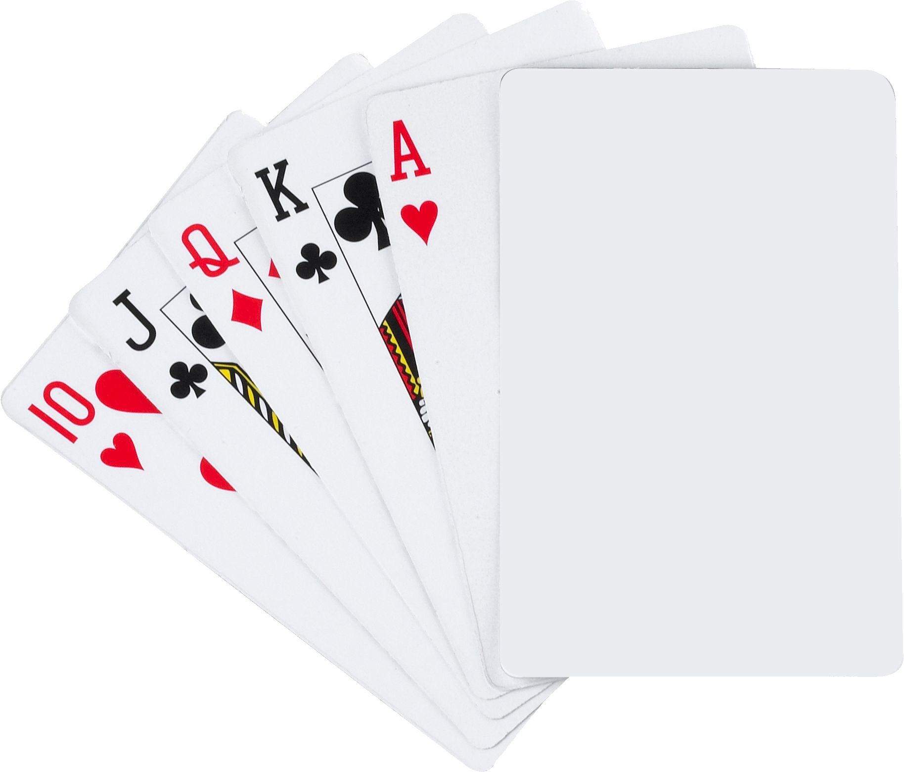
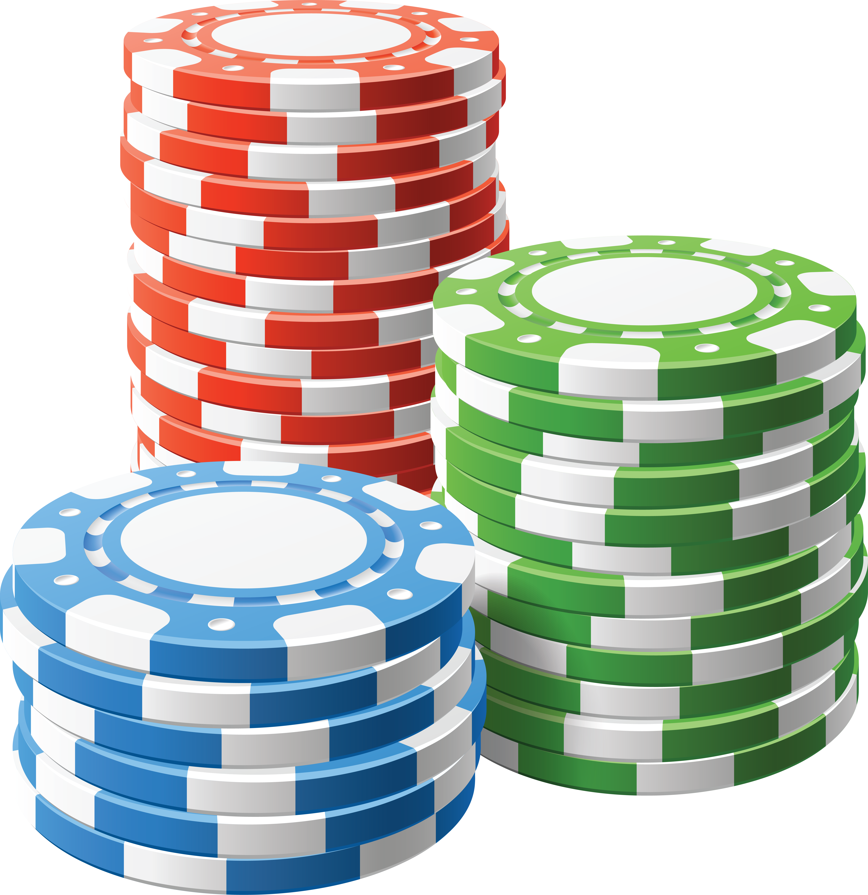

Welcome, this website is about the short history of casinos and few notable games that are very popular today with explanations to their games
Gambling dated back to 500BC where the first gambling games appeared. It was frowned upon during those times, so they created chips in order to mask to avoid prosecution with gambling real money. Over the centuries new restrictions were appearing and was played outside in public and in private houses.
The first casino appeared in Venice in 1638 called the Ridotto Venice the first gambling house which was owned by the government. Every dime was spent on the decration to attract the upper class and remained opened until the 18th century when gambling was banned.
In the late 18th century it would have a resourgence used as a tourist attraction in many locations increaseing economies in those areas.
Despite many places attempting to ban gambling, it was unstoppable as it flourished and became more social with games such as roulette as people can communicate with each other, be competitive, and be excited for the results.
Throughout the time addiction became a known sickness rather than being a sin. Casinos would move to different places if they were banned in certain places which would not stop their rise. People would come and go to these places and addictions would be at a high.
Despite Casinos being here for a good amount of time, it remained largerly unchained from the 19th century, offering food, entertainment, and gambling to those who were willing to pay. Large payers would become VIP's in casinos for casinos to bleed them of their money.
With casinos evolving and becoming what they are today. Colorful, bright, addicting with many hits of dopamine to your brain. It is no wonder you do no know what to do when you are stuck in a loop of constant gambling your money away. Below there is a list of notable games that are played in casinos.
 A card comparing game is a simple game of tricking people if you might have or do not have. Usually played with one standard game poker has little origin as it appeared multiple times throughout history.
Poker is one of the only games that relies heavily on skill but luck is still a factor with having the chance of combos that you combine with your two cards such as high card, pair, double pair, three of a kind, etc..
It became much more popular as poker was available to be played online in the 21st century and remains one of the most popular games.
Slots is arguably the simplest game as you gamble a certain amount of money and you start the game as you watch slots moving as you await to see a combo. This game is pure luck and designed to be against you as most players will not win big or even small sometimes.
People still go to them as their simple design and understanding are friendly towards people who just want to spend money without thinking too much.
Despite its simple design, its colorful animations shown towards you increase your dopamine intake craving for more which makes it one of the most addictive.
Blackjack is a game where you draw cards and attempt to keep them below 21, if went over it is game over. In this, you are trying to get a high number to beat the dealer as he goes right after you stay with your hand.
He can bust over 21, have a higher hand but still lower than 21, or lose if he has 17 or higher but lower than your hand. It is also luck-based but some strategies are utilized. Card counting is a strategy where you remember which cards are left in the deck but casinos consider it as cheating and you would be kicked out.